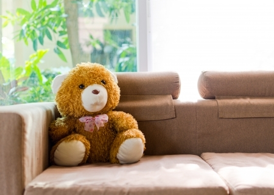
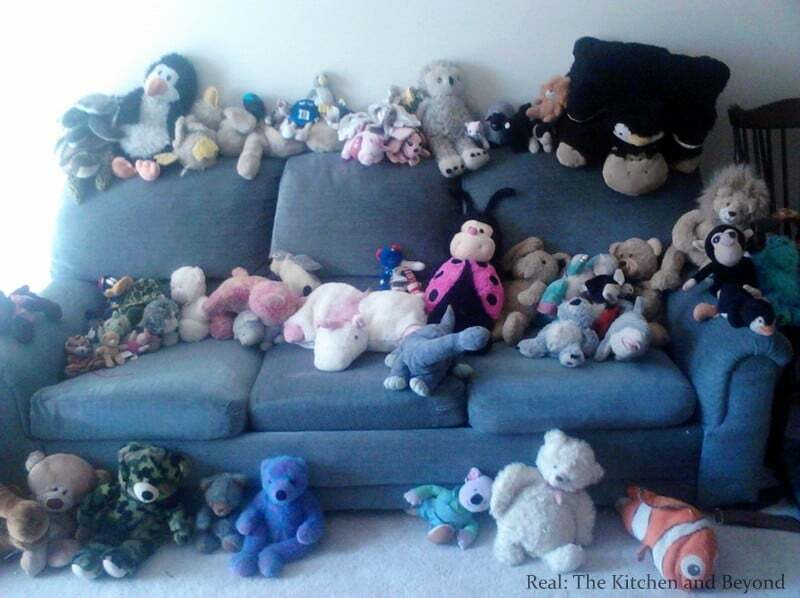
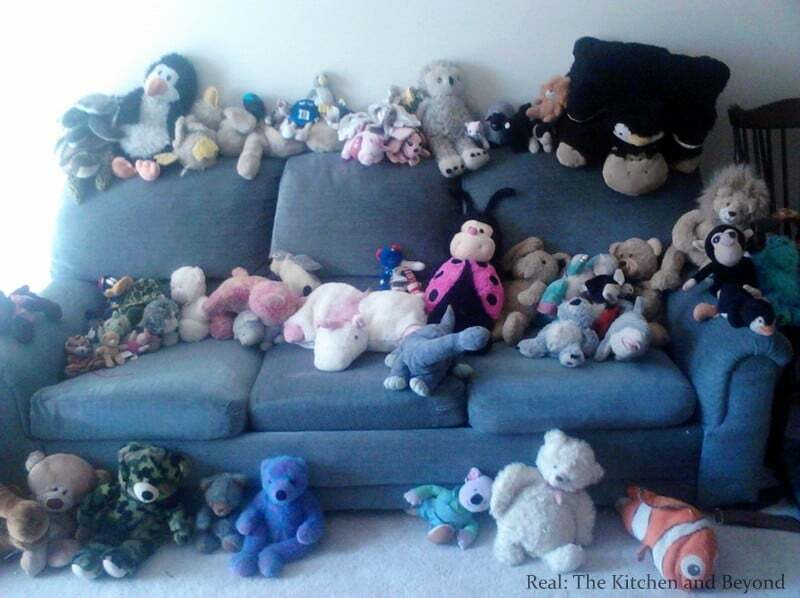
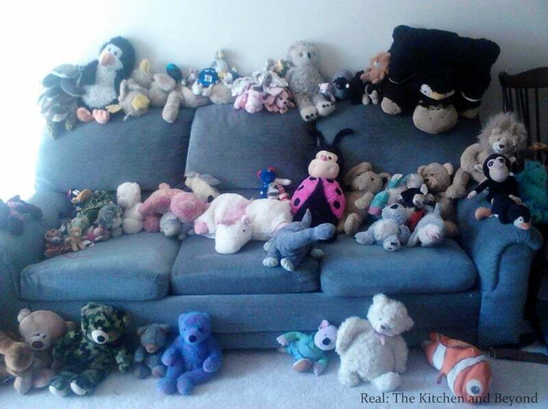
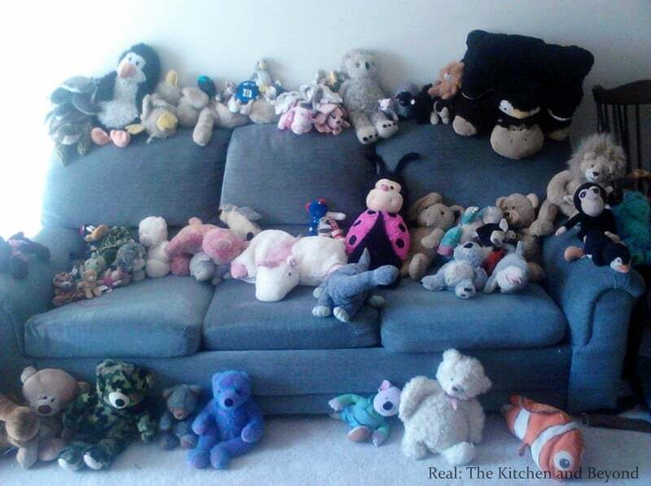

 


Train:
Candidates: 0, 1, 2, 3

Intended concept: Every teddy bear is sitting on a sofa.
Solution provided by tool:
The chosen answer is 0.
The discriminator is: Exists q0: sofa!0. Forall q1: teddy bear!1. And(sitting_on!1!0)